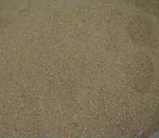
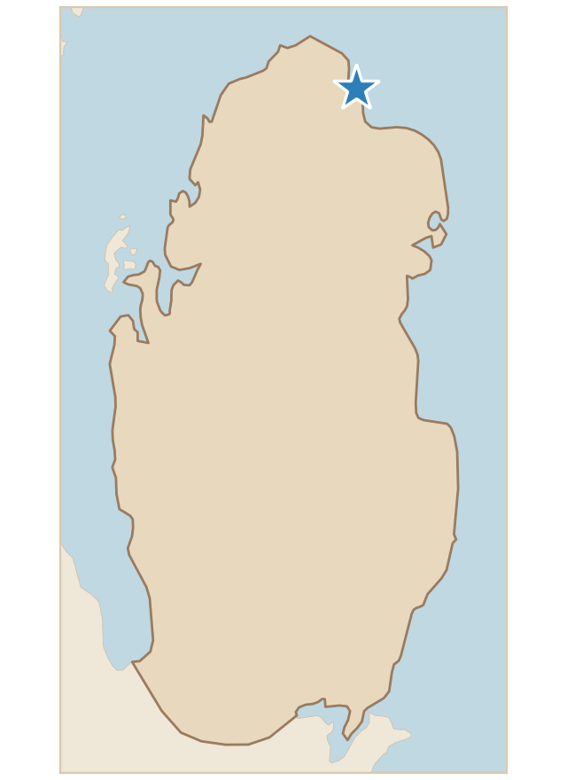

رمل ساحلي ناعم مجاور للشاطئ، يخلو من المحارات البحرية لارتفاع مكان الجمع عن أرض الشاطئ. ويكاد يخلو هذا النوع من الرمال من النباتات بمحاذاة الشاطئ، أو توجد به بعض النباتات والشجيرات الملحية ذات الجذور العميقة، ولكن وجودها ضعيف ومتناثر.
Fine coastal sand next to the shore. It is free of marine shells because the collection site is higher than the beach ground. This type of sand is almost devoid of plants along the shore, or it contains a few salt-tolerant plants and shrubs with deep roots, but their presence is weak and scattered.